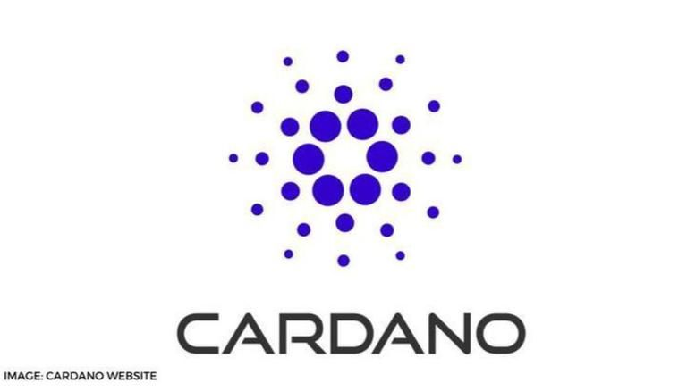

Cardano is a public blockchain platform.
It is open-source and decentralized, with consensus achieved using proof of stake. It can facilitate peer-to-peer transactions with its internal cryptocurrency, Ada.
Cardano was founded in 2015 by Ethereum co-founder Charles Hoskinson. The development of the project is overseen and supervised by the Cardano Foundation based in Zug, Switzerland.[5][6] It is also the largest cryptocurrency to use a proof-of-stake blockchain, which is seen as a greener alternative to proof-of-work protocols
